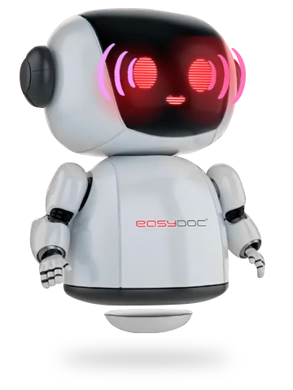
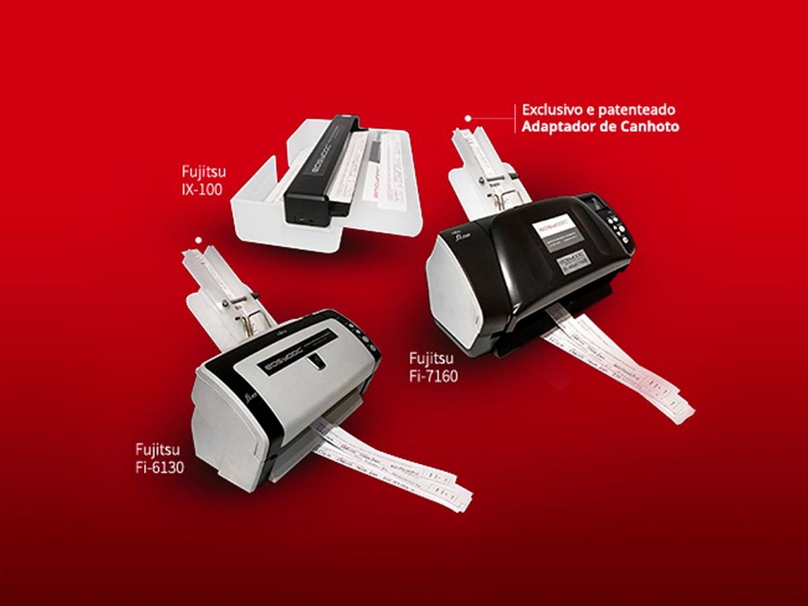

!
Dificuldade na obtenção de comprovantes de entrega digitais de qualidade junto aos seus motoristas.
Saiba como a digitalização de comprovantes de entrega pode transformar a operação da sua transportadora, acelerando pagamentos, reduzindo custos e elevando a satisfação dos clientes.
Atualmente, muitas transportadoras possuem 2 desafios na sua operação junto a seus clientes:
Dificuldade na obtenção de comprovantes de entrega digitais de qualidade junto aos seus motoristas.
Integração adequada a um sistema, para poder disponibilizar informações em tempo real a seus clientes.
Bloqueio e recusa de pagamentos, impactando diretamente o fluxo de caixa da empresa.
Perda de tempo e recursos corrigindo problemas com as imagens, entrando em contato com motoristas e lidando com clientes insatisfeitos.
Impacto negativo na imagem da empresa, pela falta de agilidade na comprovação de entregas, inclusive colocando futuras negociações em risco.


É crescente a demanda do mercado por processos digitalizados, ágeis e sem papel. E muitas transportadoras ainda utilizam sistemas que deixam a desejar, com limitações como:
Dependência de fotos de celular sem um sistema que faça a validação da foto.
Falta de integração entre a captura de comprovantes e o sistema de gestão.
Dificuldade em atender às exigências dos clientes por informações em tempo.
Com a Easy Doc, sua Transportadora pode experimentar uma transformação significativa nas suas operações, com a digitalização dos comprovantes de entrega de forma descentralizada. Essa solução conta com o fornecimento de:
Dispositivos customizados de hardware, para digitalização rápida de canhoto de Nota Fiscal, Dacte e outros tipos de comprovantes, em todas as suas filiais.
Um software inteligente para realizar a leitura desses documentos de forma automatizada, rápida e assertiva.
Esses equipamentos transformam o documento em um arquivo digital, com ótima qualidade de imagem. E por serem integrados com o TMS, poderão disponibilizar a informação para seus clientes, no menor tempo possível.

Os benefícios das soluções Easy Doc resultam em melhorias concretas para sua Transportadora, como:
A Easy Doc conta com um processo de excelência para fornecer a você uma solução personalizada e específica para as suas necessidades.
Realizamos uma consultoria, que conta com um mapeamento detalhado dos processos e identificação dos gargalos.
Elaboramos uma solução personalizada, conforme as características da sua transportadora, garantindo a máxima eficiência.
Realizamos a implementação de forma rápida, incluindo a instalação dos equipamentos, a configuração do software e o treinamento da equipe.
Oferecemos Suporte Técnico constante, para garantir o bom funcionamento da solução e a resolução de qualquer problema que possa surgir.
A Bora Transportes é uma transportadora que realiza a transferência e distribuição de alimentos nas regiões Norte, Nordeste, MG e ES. Com 21 anos, enfrentou, juntamente com o crescimento e o sucesso, os mesmos desafios citados acima. Então contou com nossas soluções para alcançar um novo patamar de eficiência e organização.
“Os serviços da Easy Doc transformou a nossa gestão de comprovantes de entrega! Antes, perdíamos tempo e dinheiro com documentos físicos. Agora, tudo é digital, acessível em tempo real e com total segurança. A rastreabilidade melhorou muito, reduzindo erros e aumentando a eficiência da equipe!”
A Bora Transportes superou desafios e alcançou resultados expressivos com a Easy Doc. E você, está pronto para a sua transformação digital?